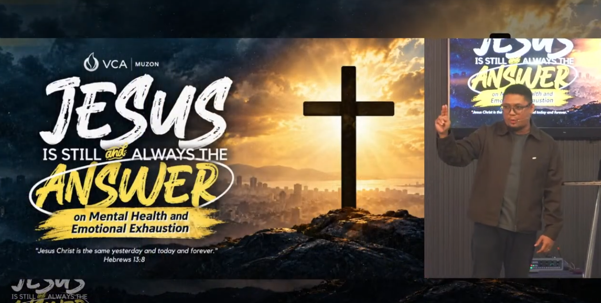

1:45:14
1:45:14
JESUS IS STILL AND ALWAYS THE ANSWER — WEEK 4
PTR. Boaz Crescini
Description not provided.
Watch Sermon
Sunday Service
Be encouraged and strengthened by God's Word. Watch our latest Sunday messages anytime.
Messages below are manually maintained. Visit our YouTube channel for the latest updates.
Sunday at (Philippine Time)
Livestream status is not available yet.
No livestream is available on this page at the moment. Please explore the preachings below.
Featured
Recent
No sermons are available yet.
Loading the sermon archive...
The sermon archive is temporarily unavailable. Please try again later.
1:45:14
PTR. Boaz Crescini
Description not provided.
Watch Sermon
 1:46:12
1:46:12
PTR. Sharrah Gervais
Description not provided.
Watch Sermon
 2:05:15
2:05:15
PTR. Boaz Crescini
Description not provided.
Watch Sermon

1:33:00PTR. Boaz Crescini
Description not provided.
Watch Sermon